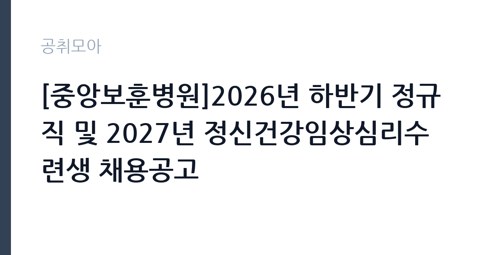

[공공기관] [중앙보훈병원]2026년 하반기 정규직 및 2027년 정신건강임상심리수련생 채용공고
한국보훈복지의료공단 · 서울 · 마감 2026-11-13 (D-14) · 출처 잡알리오

한눈에 보는 모집 조건
| 기관 | 한국보훈복지의료공단 |
|---|---|
| 공고명 | [중앙보훈병원]2026년 하반기 정규직 및 2027년 정신건강임상심리수련생 채용공고 |
| 고용형태 | 정규직 |
| 근무지 | 서울 |
| 게시일 | 2026-10-30 |
| 마감일 | 2026-11-13 (D-14) |
지원자격, 이렇게 읽으세요
- 응급구조사: 공고일 기준 1급 응급구조사 자격증 소지자
- 방사선사: 공고일 기준 방사선사 면허증 소지자
- 임상병리사:공고일 기준 임상병리사 면허증 소지자
정규직 채용은 기간의 정함이 없는 근로계약을 전제로 합니다. 수습 기간을 두고 평가한 뒤 정규직으로 확정하는 절차가 일반적이며 기관의 인사 규정과 임금 체계를 적용받습니다. 이번 공고는 한국보훈복지의료공단이 직접 진행하는 자체 전형입니다. 직종마다 필수 자격이 다르므로 본인이 지원할 직종의 요건만 확인하면 됩니다. 응급구조사는 1급 응급구조사, 방사선사·임상병리사·치과기공사·의지보조기 기사는 해당 면허, 전산담당은 정보처리기사가 요건입니다. 시설(건축)은 건축산업기사 또는 실내건축산업기사 이상, 시설(기계)은 에너지관리기능사 이상, 시설(소방)은 소방설비산업기사, 시설(통신)은 정보통신·방송통신·통신선로산업기사 이상이 기준입니다. 정신건강임상심리수련생은 임상심리사 1급과 심리학 석사학위를 함께 요구합니다. 공고일 기준 정년인 만 60세에 도달한 사람은 지원할 수 없습니다. 경력 인정 여부는 증명서 기재 내용으로 결정되므로 직무 기술을 상세히 요청하십시오. 학력이나 전공 요건이 없는 공고라도 제출서류 목록은 그대로 적용되므로 서류 준비 부담은 줄지 않습니다. 우대 사항에 해당하면 증빙을 반드시 첨부해야 하며, 누락하면 가점 없이 평가됩니다. 이 공고 원문에 적힌 응시 조건 문구는 '응급구조사: 공고일 기준 1급 응급구조사 자격증 소지자' / '방사선사: 공고일 기준 방사선사 면허증 소지자' / '임상병리사:공고일 기준 임상병리사 면허증 소지자'입니다. 문구를 그대로 읽고 본인 해당 여부를 하나씩 표시해 두면 서류 단계에서 탈락하는 일을 줄일 수 있습니다.
이 공고의 포인트
이 건은 한국보훈복지의료공단이 같은 시기에 낸 3개 모집분야 가운데 보훈병원 기술·지원직군 직무입니다. 다른 직무 공고와 요건이 다르므로 지원 전에 모집분야 표를 대조해야 합니다. 이 공고의 첫 번째 포인트는 고용 형태입니다. 수습 기간 평가를 통과하면 기간의 정함이 없는 신분이 되어 고용이 안정됩니다. 두 번째는 업무 범위가 명확하다는 점입니다. 보훈병원 기술·지원직군 직무로 채용되므로 배치 이후 담당 업무가 크게 흔들리지 않습니다. 세 번째는 근무지입니다. 서울 지역 근무로 접근성은 좋지만 그만큼 지원자가 몰리는 지역이므로 경쟁률을 넉넉히 잡아야 합니다. 재공고로 올라온 공고라 이전 차수 지원자와의 형평성 기준을 확인할 필요가 있습니다. 같은 직무로 함께 올라온 공고 가운데 접수 마감이 가장 늦은 편이라 준비 시간을 상대적으로 확보할 수 있습니다. 선발 인원은 공고문에 명시되어 있으니 모집분야 항목을 함께 확인하십시오.
전형은 어떻게 진행되나
서류전형과 면접전형 외에 직무수행능력 평가가 붙는 경우가 있습니다. 평가 방식은 공고문에 구체적으로 적혀 있으므로 어떤 항목에 배점이 높은지 먼저 파악하십시오. 면접에서는 지원 동기보다 실제 업무 경험에 대한 질문이 많고, 답변의 구체성이 평가를 가릅니다. 전형 일정은 서류 마감 이후 빠르게 진행되므로 연락 가능한 번호를 정확히 기재하고 문자와 메일을 수시로 확인해야 합니다. 최종 단계에서는 결격사유 조회와 신체검사가 진행됩니다. 경력 증명서에 직무 내용이 적혀 있지 않으면 인정받지 못할 수 있으므로 상세 기재를 요청하십시오.
원문에서 확인한 전형 방식
[공통 자격요건] - 인사규정 제18조에 정한 결격사유에 해당하지 않는 자 ※단, 공고일 기준 정년(만60세)에 도달한 자는 지원 불가 [필수 자격요건] -응급구조사: 공고일 기준 1급 응급구조사 자격증 소지자 -방사선사: 공고일 기준 방사선사 면허증 소지자 -임상병리사:공고일 기준 임상병리사 면허증 소지자 -치과기공사: 공고일 기준 치과기공사 면허증 소지자 -전산담당: 공고일 기준 정보처리기사 자격증 소지자 -의지 보조기 기사: 공고일 기준 의지 보조기 기사 면허증 소지자 -산업안전관리자: 공고일 기준 산업안전보건법 시행령[별표4] 안전관리자의 자격 제1호 2호 4호 5호 중 하나 이상 해당하는 자 -시설(건축): 공고일 기준 건축산업기사, 실내건축산업기사 이상 자격 보유자 -시설(기계): 공고일 기준 에너지관리기능사 이상 자격 보유자 -시설(소방): 공고일 기준 소방설비산업기사(기계분야 또는 전기분야) 이상 자격 보유자 -시설(통신): 공고일 기준 정보통신산업기사 또는 방송통신산업기사, 통신선로산업기사 이상 자격 소지자 -정신건강임상심리수련생: ①국가기술자격법 시행령에 따른 임상심리사 1급 자격 소지자 ② 심리학에 대한 석사학위
이런 분께 추천해요
- 지원 직종의 면허·자격을 보유한 분
- 병원급 의료기관 근무 경험이 있는 분
- 교대·당직 근무 일정을 수용할 수 있는 분
지원 전 체크리스트
- 응시자격 요건과 경력 기준을 충족하는가 — 경력은 증명서로 입증해야 합니다
- 수습 기간과 정규직 전환 조건을 확인했는가
- 제출서류 목록을 모두 준비했는가 — 누락 시 서류 단계에서 탈락합니다
- 접수 마감 2026-11-13 이전에 접수 방식을 확인해 제출했는가
모집 일정과 제출 타이밍
접수 마감은 2026-11-13이고 공고는 2026-10-30에 게시되었습니다. 준비 기간 14일 안에 서류 작성, 증빙 발급, 접수를 모두 마쳐야 하므로 주말을 포함해 일정을 미리 나누는 것이 좋습니다. 특히 경력 기술서나 직무수행계획서를 요구하는 공고는 작성에 시간이 걸리므로 첫날 초안을 잡으십시오. 서류 합격자 발표와 면접 사이 간격이 짧은 경우가 많아 면접 예상 질문은 서류 제출 전에 정리해 두는 편이 유리합니다. 마감 직전에는 접속이 몰리므로 여유를 두고 제출하십시오. 공휴일이 끼어 있으면 증명서 발급이 늦어질 수 있으니 발급 일정을 앞당기십시오.
직무 이해하기: 공공기관
한국보훈복지의료공단은 국가유공자와 보훈대상자의 진료와 복지를 담당하는 공공기관으로, 전국에 보훈병원과 보훈요양원을 운영합니다. 병원은 진료과와 검사실, 재활·요양 부서로 나뉘고 의료기술직·기능직·업무지원직이 함께 근무합니다. 국가유공자 진료라는 기관 성격상 의료 정보와 개인정보 보호 요건이 엄격하고, 교대·당직 근무가 포함되는 자리가 많습니다. 중앙보훈병원은 국가유공자와 보훈대상자의 진료를 담당하는 공공 의료기관입니다. 이번 공고는 한 장에 여러 직종을 담은 묶음 채용으로, 응급구조사는 응급실과 병동의 응급 처치를, 방사선사는 영상검사 촬영과 판독 지원을 맡습니다. 임상병리사는 검체 검사와 결과 관리, 치과기공사는 보철물 제작, 전산담당은 병원 정보시스템 운영을 담당합니다. 의지보조기 기사는 보조기 제작·조정, 산업안전관리자는 병원 안전보건 관리, 시설 직군은 건축·기계·소방·통신 설비 관리를 맡습니다. 정신건강임상심리수련생은 수련 과정을 함께 거치는 별도 전형입니다. 업무 도구와 장비는 기관이 지급하며, 지급 품목과 교체 주기는 부서 규정을 따릅니다. 업무 매뉴얼과 지침이 문서로 정리되어 있어 절차를 익히면 반복 업무는 빠르게 손에 붙습니다. 원문에 '방사선사: 공고일 기준 방사선사 면허증 소지자'라는 조건이 명시되어 있습니다.
자기소개서 작성 팁
지원서 첫 문단에서 지원 직종을 분명히 밝히는 것이 가장 중요합니다. 묶음 공고는 직종별로 평가 기준이 달라 어떤 자리에 지원했는지가 드러나지 않으면 준비도가 낮게 보입니다. 보유 면허와 취득 연도, 실무 경력 연수, 다뤄본 장비·검사 항목을 구체적으로 쓰십시오. 국가유공자 진료라는 기관 성격에 대한 이해를 한 문단 더하면 차별화됩니다. 문항별 글자 수 제한을 먼저 확인하고, 각 문항의 첫 문장에 결론을 배치하는 방식이 읽기 쉽습니다. 지원 동기는 기관의 어떤 사업에 기여하겠다는 한 문장으로 시작하고, 이어서 본인의 경험을 근거로 붙이십시오. 감점을 피하려면 다른 기관에 보낼 수 있는 범용 문장을 그대로 쓰지 않는 것이 중요합니다. 기관 이름과 사업명이 문장 안에 자연스럽게 들어가야 준비도가 드러납니다.
면접 준비 포인트
면접은 지원 직종의 실무를 기준으로 진행됩니다. 사용하는 장비와 검사 절차, 이상 소견을 발견했을 때의 보고 체계를 구체적으로 답하십시오. 병원 근무 특성상 환자 응대와 개인정보·의료정보 보호 태도가 함께 평가됩니다. 교대 근무와 당직 가능 여부도 확인 질문으로 나오므로 솔직하게 답하는 편이 좋습니다. 답변 시간이 짧게 정해져 있는 경우가 있으므로 핵심 문장을 먼저 말하고 근거를 붙이는 방식이 유리합니다. 지원 기관의 최근 사업이나 조직 개편 내용을 확인해 두면 지원 동기 질문에서 차이가 납니다.
급여·근무조건 읽는 법
알리오(공공기관 경영정보 공개시스템) 2025년 결산 경영공시 기준으로 한국보훈복지의료공단 일반정규직 1인당 평균보수액은 7,172만원, 공시된 신입사원 초임은 4,170만원입니다. 평균보수액은 기본급에 고정수당·실적수당·성과상여금·급여성 복리후생비를 모두 합산한 값이라 월 기본급만 보고 판단하면 실제와 크게 어긋납니다. 정규직 신입의 경우 공시된 신입사원 초임이 출발점이 되고, 이후 호봉과 성과급에 따라 평균보수에 접근합니다. 보수는 채용 신분과 기관의 임금 규정에 따라 정해집니다. 공무직과 기간제는 기관 임금표를, 임기제공무원은 연봉등급제를 적용받습니다. 공고문에 금액이 제시되지 않은 경우에는 처우 항목이나 첨부된 보수표를 확인해야 합니다. 수당과 상여 포함 여부에 따라 실수령액이 달라집니다. 2026년 적용 최저임금은 시급 10,320원, 월 환산 2,156,880원(주 40시간·209시간 기준)입니다. 고용노동부 고시 제2025-47호로 확정된 금액입니다. 공고문에 금액이 제시되지 않은 항목은 원문 보수표나 처우 설명에서 확인해야 하며 확인되지 않은 수치는 쓰지 않는 것이 원칙입니다. 비교할 때는 월 급여뿐 아니라 상여·명절휴가비·복지포인트·초과근무수당까지 포함한 연간 총액으로 계산하십시오. 기간제라면 계약 기간 동안의 총액을, 무기계약이라면 호봉 상승과 정년까지의 누적 소득을 기준으로 판단하는 편이 정확합니다.
자주 묻는 질문
- 선발 인원은 몇 명인가요?
공고문의 모집분야 항목에 직종별 인원이 표로 제시되어 있습니다. 첨부된 공고문 원문에서 확인하십시오. - 근무지는 어디인가요?
서울 지역의 한국보훈복지의료공단 소속 근무지입니다. 세부 주소와 출퇴근 조건은 원문 공고문에서 확인할 수 있습니다. - 보수는 얼마인가요?
채용 신분(정규직)과 기관 임금 규정에 따라 정해지며 구체적인 금액은 공고문 처우 항목에 제시됩니다. 금액이 공개되지 않은 경우에는 원문의 보수표를 확인하십시오.
함께 보면 좋은 공고
[공공기관] 2026년 하반기 제2차 한국문화예술위원회 휴직대체인력(일반행정) 및 계약직(일반행정) 채용 — 마감 2026-11-13[공공기관] 기장군도시관리공단 2026년도 체험형 청년인턴 채용 재공고 — 마감 2026-11-10[공공기관] [광주보훈병원] 계약직 업무지원직(고객지원_검사코디) - 휴직대체 직원 채용 공고 — 마감 2026-11-09출처: 잡알리오 공개정보를 바탕으로 공취모아가 정리한 안내글입니다. 모집 조건·일정은 변경될 수 있으니 지원 전 반드시 원문 공고문을 확인하세요. 본 글은 정보 제공용이며 합격을 보장하지 않습니다.